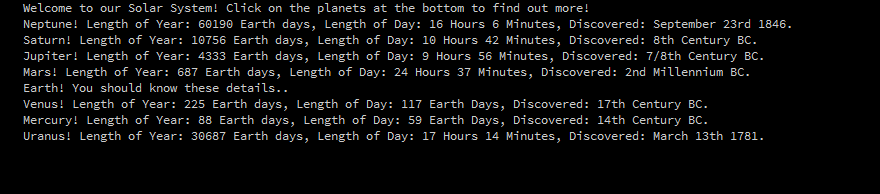

Charlie JacobsI'm Charlie, student at City University of London, studying computer science with a desire to move into the financial world in the future. I have previous experience in stock trading using fundamental and technical analysis but would love to learn more about deep learning algos and the future of the industry as a whole. I have very little prior knowledge in coding so this has been largely my first experience with it and am enjoying it so far! parsnip |
||
|
|
||
Bootcamp 2020: Solar SystemMy project started out as a simple animated solar system which allowed me to demonstrate multiple skills I have picked up throughout bootcamp. For example the use of classes and arrays for the planets in my sketch, the use of if statements for the interactive buttons, and the addition of atmospheric music to compliment the sketch's animation. The stars background was also created in processing using loops and then screenshotted and imported as an image. Of course the sun is far too small in this sketch, the size and orbit speeds of the planets are somewhat accurate relative to each other however I would not rely on it! I find now that the sketch is more relaxing than informative which wasn't my initial intention however I feel it works well considering I could not code at all just two weeks ago, proves bootcamp has been successful! One issue I did discover too late in the process was that I wrote the sketch on a 1440p display, meaning when I set the size of the sketch to 1000,1100 it looked fine on my screen but will be too large for a 1080p display, this is something I will have to take into account for projects in the future. Check out the code on Github: https://github.com/charliejacobs98/adbs982 | ||
|  | ||